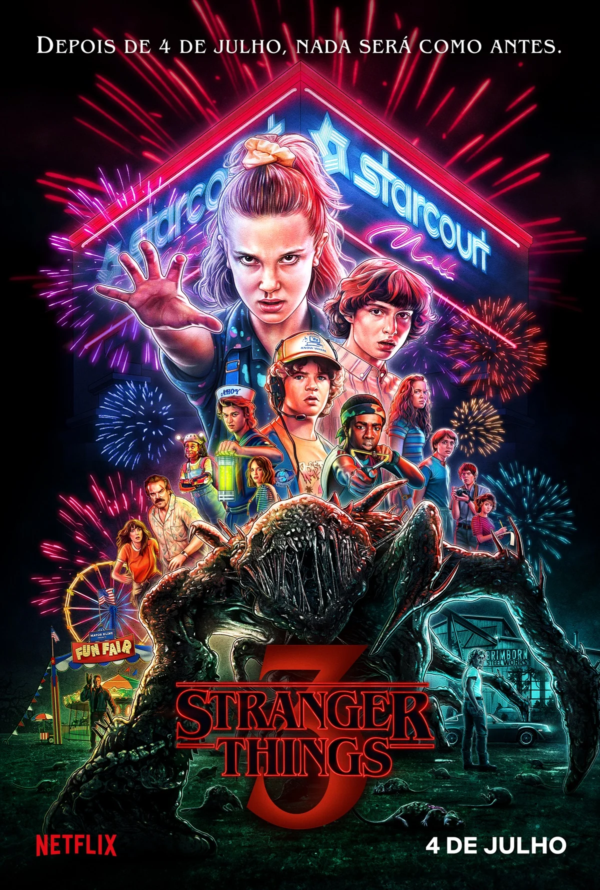

Breaking Bad
Um professor de química se transforma em um poderoso traficante de metanfetamina. Drama intenso e atuações incríveis.
Gênero: Drama, Crime
Ano: 2008-2013

Stranger Things
Uma série de ficção científica e horror que traz nostalgia dos anos 80 e personagens cativantes.
Gênero: Ficção Científica, Terror
Ano: 2016-presente

The Office
Uma comédia de situação que retrata o dia a dia dos funcionários de uma empresa de papel.
Gênero: Comédia
Ano: 2005-2013